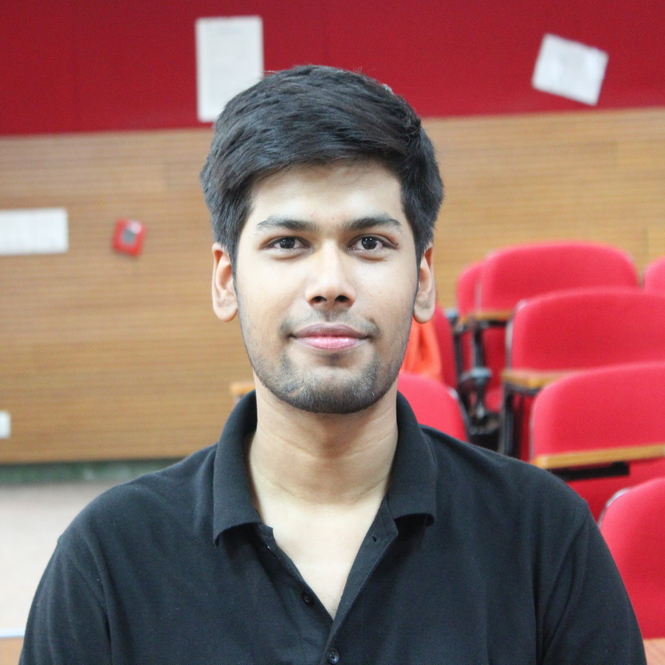

Hi! I am Divyanshu 👋.
Pronouns: he/him.
I'm a PhD Candidate in Information Science at the University of Colorado Boulder, where I am adivsed by Bryan Semaan. Broadly, I am interested in how mundane technologies (e.g. names, documents, YouTube) around us are shaped by/through the history and lived realities of the communities at the margins of our society.
My current research focuses on the caste system, examining the mechanisms in which caste influences the experience of lower-caste communities with technology (e.g. social media) and underlying socio-technical production of technology (e.g. AI). I conduct empirical research with interpretivist tradition, particularly employing tools such as ethnography, algorithmic audits, and theoretical analysis/development.
Before starting my PhD, I worked as a Software Engineer at Scry Analytics for a year. I completed my B.Tech in Computer Science and Engineering from IIIT Delhi, India in 2021. I worked as a student reseracher in Human-Machine Interaction Lab where I worked with Jainendra Shukla, Venkata Ratnadeep Suri and Pushpendra Singh.

contact me
Email: Divyanshu[dot]Singh[at]colorado[dot]edu
Twitter: @uhsnayvid
LinkedIn: divyanshukumarsingh